- Before Getting Started
- Changing The Main Color
- Welcome Box
- Font Awesome Icons
- Main Menu
- Logo
- Skins
- Contact Form
- Getting Recent Tweets
- Switcher enable/disable
- Flickr
- Css Files
- Images
- JS Files
Before Getting Started
First of all thanks for buying HoneyComb HTML template. We really hope that you enjoy our product.
This documentation file helps you know the most popular options and lets you make your tweaks where you want.
Our themes usually get regular updates including bug fixes and improvements. So, don’t forget to
follow us on Twitter and
Envato.
Some Important Notes:
- Please take the time to read through the documentation, as many support related questions can be answered simply by re-reading these instructions.
- We will be happy to help you tweak the theme but just for small ones. For more advanced customizations, contact us for paid customizations.
- If you have any support questions, please register on our support forum. If you want to remain anonymous, use our profile page to send email. So we can confirm you've purchased this theme.
- Again, Thanks for purchasing our themes. Please don't forget to give us some stars if you enjoyed using our themes.
Changing The Main Color
HoneyComb HTML template enables you to set your desired color as the main color of your website. In default the main
color code is #00b8ad and you can easily change it.
To change the main color (accent color), open style.css file. This file is located in the root, where
the index.php is located. Then find the commented text 2. Colors, and finally find and
replace the default color code like the image below:
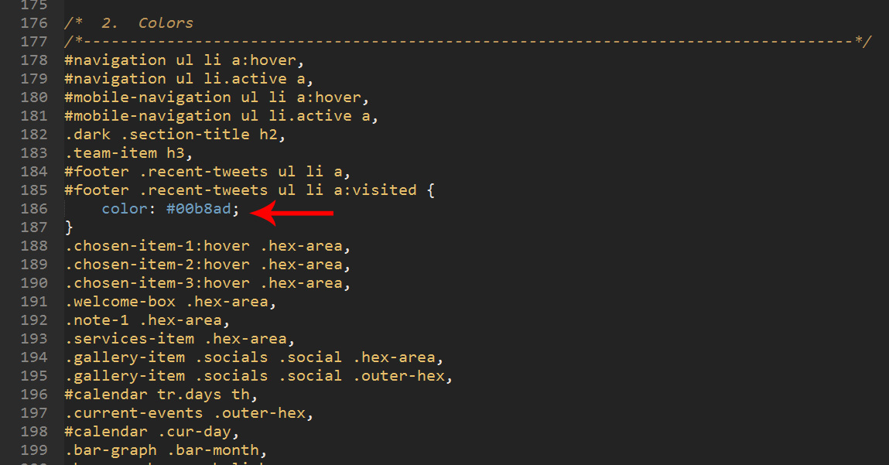
Welcome Box
To change the welcome box content, open "index.html" and find welcome-box HTML class. Then
replace default texts with your desired ones just like the image below:
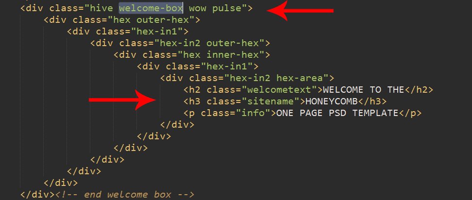
Font Awesome Icons
HoneyComb enables you to use more than 300 Font Awesome Icons. You can find list of Font Awesome icons
here. Note that you can easily change every Font Awesome default icon just
by setting the element's HTML class name just as like as the image below. Note that the HTML class name should be the icon name:
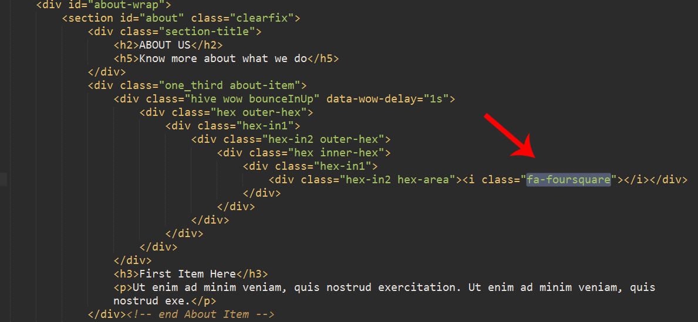
Main Menu
To change the main menu items, find the navigation and mobile-navigation HTML id names
and then set your desired texts and href values there. Note that both of "navigation" and "mobile-navigation"
should be the same. Because "navigation" appears in bigger screens like desktop computers and the "mobile-navigation"
appears in small screen devices like mobiles.
Take a look at the image below to see both of them at a glance:
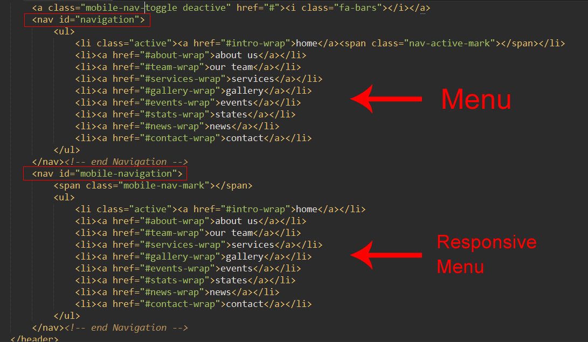
Logo
To change the logo image and URL, find logo HTML id and change logo image url and link url like the
image below:
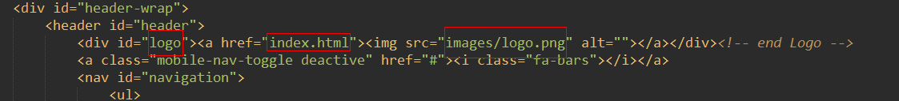
Skins
HoneyComb provides seven default skins for you. These skin CSS files are located in "colors"e folder and you
can easily change your website skin by just adding one HTML line.
To do this, open "index.html" in your text editor and just link one of these CSS files to your page just by
adding the shown code below (Note that we have set blue.css file as the skin but you can set one of those
7 CSS skin files as your desired one):
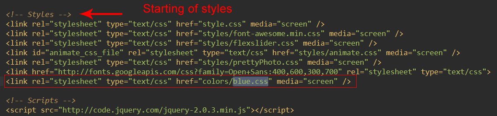
It's really recommended to add this code at the end of styles to override all previous styles.
Contact Form
HoneyComb provides an ajaxed contact form. In default, there is an ajaxed contact form in Pages_Contact.html.
Note that the contact form parameters are sent to a PHP file in the same directory which is named action.php.
To use this ajaxed contact form, you just need to insert your email address into action.php just as like as
we show in the picture below. As you see in the image above, the default email is highthemes.com@gmail.com that you certainly need to replace
this default value by your desired email.
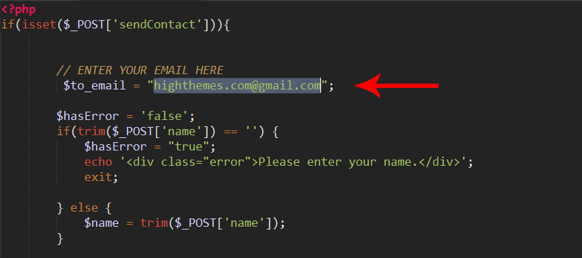
Getting Recent Tweets
In this section we teach you how to get your recent tweets from Twitter and put them in the sidebars.
First of all go to scripts/twitter/index.php and then put your own values there as it's shown in the image
below:
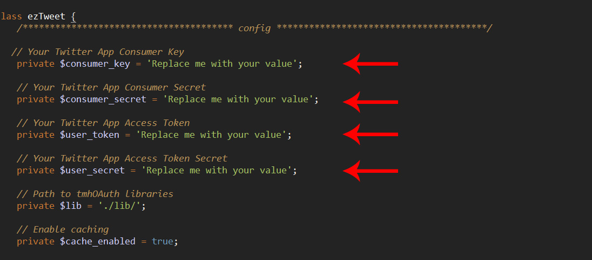
As you see in the picture above, you should insert 4 values there and enclose them with a pair of quotes.
Then you need to put a jQuery function in every page you want to put your recent tweets there and config it just as like
as below (The default username is "theHighThemes"):
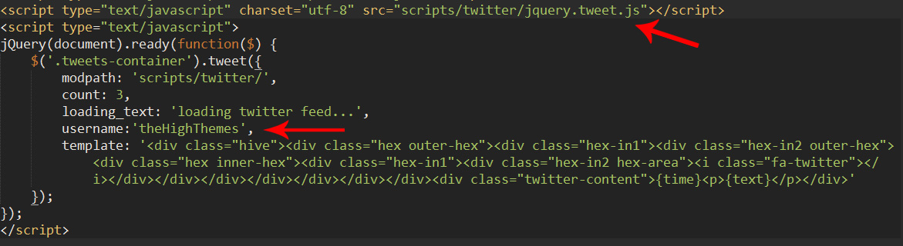
You can find an example of this jQuery function in index.html.
Switcher enable/disable
In default HoneyComb has a color switcher and this feature enables you to test different colors on the template by a
color picker and select your desired color code.
To disable the switcher, go to scripts/custom.js and then remove or comment the like is shown in the
image below:
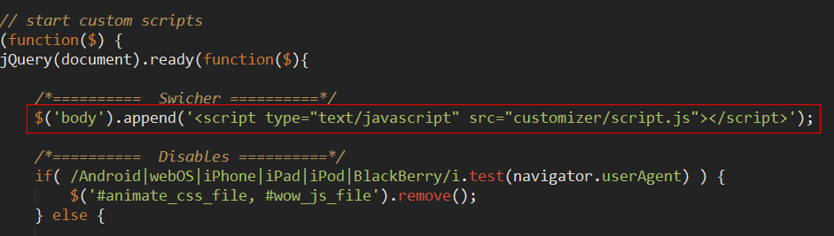
Flickr
To put your Flickr photos in your website, first of all you need to get your ID from idgettr.com. Then open
index.html via your text editor and put your id in the file just as like as the image below:
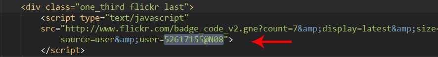
CSS Files
HoneyComb HTML template has some CSS files. Two of these CSS files are located in the root. These are named
style.css and custom.css. The main CSS file is "style.css" and
"custom.css" contains the CSS codes which can be dynamic, such as accent color for different elements
fonts and etc that can be changed by the user.
The other CSS files are located in a folder named CSS. This folder contains some CSS files
such as "responsive.css", "flexslider.css" and ...
Note that CSS files are organized like below:
*/ /* 0. CSS Reset /*-----------------------------------------------------------------------------------*/
/* 1. General Structure & Global Classes /*-----------------------------------------------------------------------------------*/
Images
All images are located in images folder. Note that most images are directly in the "images"
folder and some images are in other folder. Which is named "prettyPhoto"
JavaScript files
The theme comes with a lot of Javascript features. jQuery is the core library of all scripts.
If you need to customize any of effects, go to scripts folder and open custom.js